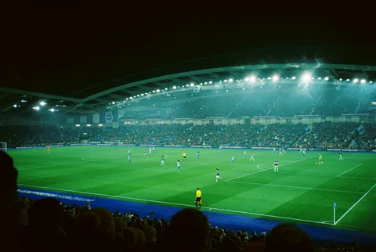

Five levels of emphasis
Filled · tonal · outlined · elevated · text. Hover and press strengthen the boundary; focus adds a separate ring.
ZZSTREAMS / THE BUILDING BLOCKS / 02
From the first tap to the last detail. A fuller component family, informed by Material Design 3 and made our own through Signal Pitch color, quiet surfaces and precise type.
Interactive, local examples. No installation, network requests or saved preferences. Switch themes, use the keyboard, and try the controls.
01 / DO THE NEXT THING
Filled for the next step. Tonal and outlined for alternatives. Text and icon buttons for supporting actions. Use one prominent primary action per task, not one per card.
Filled · tonal · outlined · elevated · text. Hover and press strengthen the boundary; focus adds a separate ring.
48px icon targets. Toggle labels expose the state. An extended FAB is reserved for a page’s principal creation task; it stays in flow here.
Arrow keys move through the menu, Enter chooses, Escape dismisses. Unavailable actions remain named and do not run.
A single Tab stop enters the toolbar. Left/Right moves between its controls. Keep labels on unfamiliar actions.
Action examples ready.
02 / MAKE A CHOICE
Checkboxes for a set; radios for one choice; switches for an immediate setting. Chips narrow the current task, while connected segments change the current view.
1 of 2 available channels selected.
Use a radio group for a small set of mutually exclusive choices. The original stream remains the default.
The preview changes immediately. Form settings that need Save should use checkboxes rather than promise immediate switch behavior.
Day view selected.
Native radio keyboard behavior, a visible check and a selected boundary. Opposing views are not an on/off setting.
All categories are included.
Use chips for contextual options. Keep the task’s Save and Continue actions as buttons.
2 filters selected.
Each removal has its own accessible name. Delete or Backspace also removes the focused chip.
03 / MAKE INTENT CLEAR
Persistent labels, useful supporting text and a visible recovery. Browser-native selection and date controls retain familiar keyboard and assistive-technology behavior.
3 example channels.
No matching channels. Try another name or clear the search.
08:00–22:00. End must be after start.
No example schedule selected.
The modal uses native date/time inputs and a named timezone. Production must validate DST and exact instants; this example does not schedule a recording.
Keep the source’s original language track. If it is unavailable, the application must explain its fallback. This disclosure is optional help, not a place to hide an error.
Audio & subtitles mockupPersistent, tappable help works on touch devices. Native disclosure supports Enter and Space without a custom focus trap.
05 / GIVE CONTENT A HOME
Use quiet filled cards for grouping, borders for explicit boundaries and elevation only when it clarifies layering. Sheets hold secondary tasks; dialogs ask for a focused decision.

Football · category photograph. No implied match or live signal.
Explore eventsNorthlight brings your channels and guide together on a quiet surface.
Channel detailsA subtle shadow separates this floating collection from the canvas.
Leading identity, flexible text and a purposeful trailing action. Badge counts have nearby context.
Selected channel details can remain beside a catalogue without blocking it. This inline panel is a standard sheet pattern.
Modal sheets have explicit Close/Cancel controls, Escape dismissal, contained focus and return focus. No drag gesture is required.
Scroll or use the arrows. Cards stay in the DOM and keyboard order. No autoplay, hidden time limit or automatic rotation.
Pitch-side stories.
Football events mockupEvery point matters.
Tennis channels mockupCourtside perspective.
Basketball events mockupFollow the next lap.
Racing events mockup| Channel | Category | Guide | Status |
|---|---|---|---|
| Northlight | Documentary | Assigned | Unknown signal |
| Arena Sport | Football | Needs matching | Review needed |
06 / TELL THE TRUTH
Acknowledge an action near its source. Use measured progress only when it is known. Keep errors and undo opportunities available long enough to act.
Northlight is in Following.
The snackbar does not steal focus or auto-dismiss. Alt + G focuses its Undo action; Escape dismisses it when focused.
40% · illustrative progress, no import running.
Use real work totals in production. Never fabricate a percentage to make an unknown wait feel shorter.
Indeterminate indicators have no percentage. Reduced motion removes rotation while retaining the label and visible shape.
Could not load the guide. Your channels are unchanged.
Persistent errors explain the next step. Do not replace them with a short-lived toast or a color-only dot.
07 / THE SHARED CONTRACT
Every interactive family follows the same contract: resting, hovered, pressed, keyboard-focused, selected, disabled, loading and error where those states apply.
A 3px theme-aware focus ring sits outside the selected boundary. Selection also has a check, underline, thumb position or text state. No hover-only required actions.
Retain the cyan/ink palette, Inter reading text, Barlow display, 8/12px control/card corners and supplied icons. Material supplies component anatomy and interaction guidance, not replacement fonts or Google's visual identity.
48px targets, readable phone inputs, scrollable labelled tables, reduced motion and both themes. Native date/time picker interiors remain platform-owned. Examples are not connected to production APIs.
Sources: Material Design 3 components · Button hierarchy · Snackbar accessibility · Full gap analysis & implementation map.